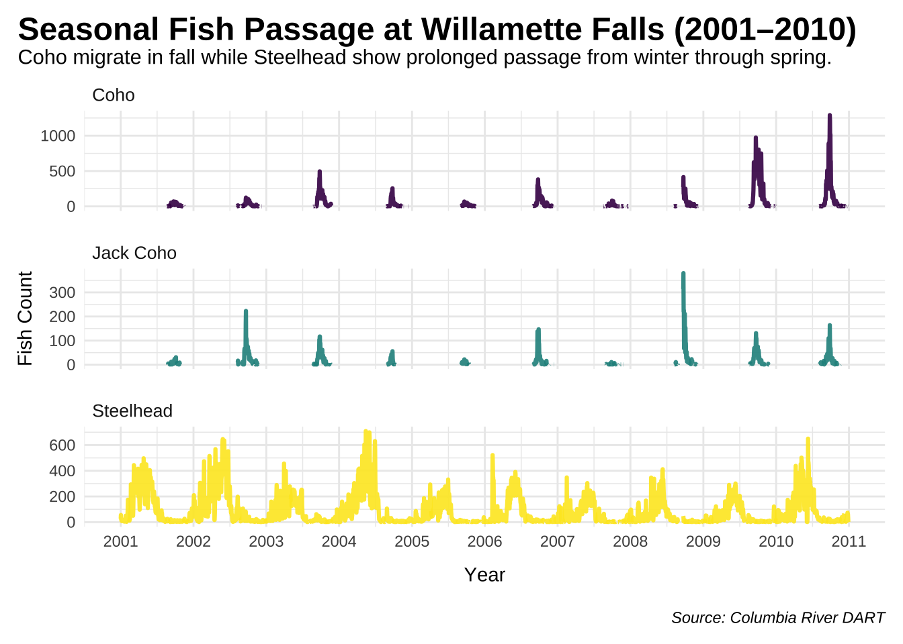
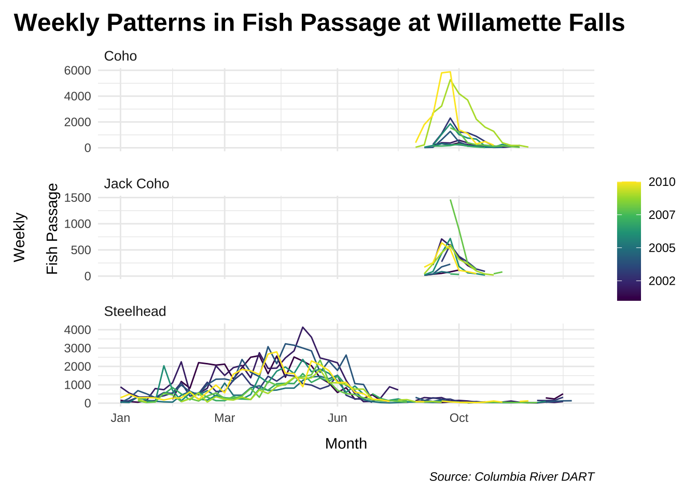
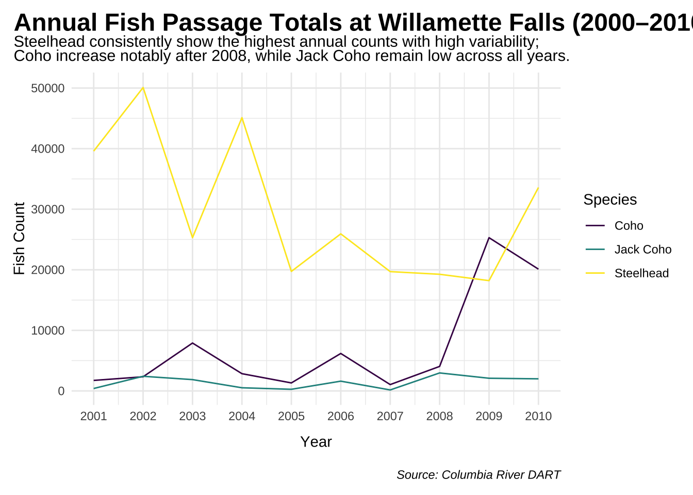

Understanding Adult Fish Passage Dynamics at Willamette Falls
Trends
Time series and seasonality analysis of adult passage for Coho, Jack Coho, and Steelhead from 2001 to 2010.
Author
Natalie Smith
Published
January 30, 2024
Overview
In my analysis, I delved into the adult passage of Coho, Coho Jack, and Steelhead from 2001-2010 at the Willamette Falls fish ladder on the Willamette River (Oregon) using data from Columbia River DART (Data Access in Real Time). My focus was on identifying patterns and trends in fish passage based on time and season. Additionally, I aimed to determine the annual counts for each species.
Adult Male Coho Salmon, BLM
Part 1: Original Time Series
Attach libraries:
Code
library(tidyverse)library(here)library(tsibble)library(feasts)library(fable)library(ggplot2)library(tidyr)library(viridis)library(showtext) library(glue)library(ggtext)#......................import Google fonts.......................# `name` is the name of the font as it appears in Google Fonts# `family` is the user-specified id that you'll use to apply a font in your ggpplotfont_add_google(name ="Montserrat", family ="mont")font_add_google(name ="Open Sans", family ="open_sans")# turn show text onshowtext_auto()
Import and Wrangle Data:
In preparing the data, I transformed it into a time series format and converted the date column from character to date format. I then pivoted the data to consolidate fish species into a single column for streamlined analysis. Finally, any missing values were replaced with zeros to ensure data integrity.
ggplot(wf_clean, aes(x = date, y = number_of_salmon, color = species)) +geom_line(size =1.1, alpha =0.9) +scale_x_date(date_breaks ="1 year", date_labels ="%Y") +scale_color_viridis_d(name ="Species", option ="D") +facet_wrap(~ species, scales ="free_y", ncol =1, labeller =as_labeller(c("coho"="Coho", "jack_coho"="Jack Coho", "steelhead"="Steelhead"))) +# LABS ----labs(title ="Seasonal Fish Passage at Willamette Falls (2001–2010)",subtitle ="Coho migrate in fall while Steelhead show prolonged passage from winter through spring.",caption ="Source: Columbia River DART",x ="Year",y ="Fish Count" ) +# THEMES ----theme_minimal()+theme(plot.title.position ="plot",plot.title =element_text(family ="sans", face ="bold", size =18, color ="black",margin =margin(b=0.75)),plot.subtitle = ggtext::element_textbox(family ="sans", size =11.5, margin =margin(t =1, b =6)),plot.caption = ggtext::element_textbox(family ="sans", face ="italic", margin =margin(t =15)),strip.text =element_text(# face = "bold",size =10, hjust =0), # Left-align facet strip text# axis.text.x = element_text(angle = 45, hjust = 1),axis.title.x =element_text(margin =margin(t =10), family ="sans"), # t = top spacing in pointspanel.spacing =unit(1, "lines"),legend.position ="none",plot.margin =margin(10, 10, 10, 10) )

Figure 1: Time series analysis of adult passage for Coho, Jack Coho, and Steelhead Salmon from 2001 to 2010.
Major patterns and notable trends:
Coho species exhibit a left-skewed pattern, with passage counts consistently increasing since 2009. Jack Coho species display a more uniform distribution, reaching peak passage counts in 2009. Steelhead demonstrate a consistent seasonal pattern throughout the analyzed time period.
Part 2: Seasonplots
Monthly and Weekly Seasonal Patterns:
Code
wf_season <-wf_clean %>%group_by(species) %>%summarize(monthly_count=sum(number_of_salmon)) wf_season %>%gg_season(y=monthly_count, pal = viridis::viridis(8))+facet_wrap(~ species, scales ="free_y", ncol =1, labeller =as_labeller(c("coho"="Coho","jack_coho"="Jack Coho","steelhead"="Steelhead"))) +scale_x_date(date_breaks ="1 month", date_labels ="%b") +#labs ---labs(title ="Monthly Fish Passage at Willamette Falls (2001–2010)",subtitle ="Monthly fish passage patterns vary by species, with sharp fall peaks <br> for Coho and extended migration periods for Steelhead.",x ="Month",y ="Fish Count",caption ="Source: Columbia River DART" ) +theme_minimal() +theme(plot.title.position ="plot",plot.title =element_text(family ="sans", face ="bold", size =18, color ="black",margin =margin(b=0)),plot.subtitle = ggtext::element_markdown(family ="sans", size =11.5, margin =margin(t =0, b =6)),plot.caption = ggtext::element_textbox(family ="sans", face ="italic", margin =margin(t =15)),strip.text =element_text(# face = "bold",size =10, hjust =0), # Left-align facet strip textaxis.title.x =element_text(margin =margin(t =10), family ="sans"), # t = top spacing in pointspanel.spacing =unit(1, "lines"),plot.margin =margin(10, 10, 10, 10) )
Figure 2: Total monthly returns of Salmon at Williamette River Dam. Lighter colors indicate later years with darker colors showing earlier years.
Code
wf_weekly <- wf_clean %>%index_by(yr_mo=~yearweek(.)) %>%group_by(species) %>%summarize(monthly_count=sum(number_of_salmon)) wf_weekly %>%gg_season(y=monthly_count, pal = viridis::viridis(8))+facet_wrap(~ species, scales ="free_y", ncol =1, labeller =as_labeller(c("coho"="Coho","jack_coho"="Jack Coho","steelhead"="Steelhead"))) +#labs ---labs(title ="Weekly Patterns in Fish Passage at Willamette Falls",# subtitle = "Seasonal trends across years for Coho, Jack Coho, and Steelhead",x ="Month",y ="Weekly Fish Passage",caption ="Source: Columbia River DART" ) +#Theme theme_minimal() +theme(plot.title.position ="plot",plot.title =element_text(family ="sans", face ="bold", size =18, color ="black"),plot.subtitle =element_text(family ="sans", size =11.5, margin =margin(t =2, b =6)),plot.caption = ggtext::element_textbox(family ="sans", face ="italic", margin =margin(t =15)),strip.text =element_text(# face = "bold",size =10, hjust =0), # Left-align facet strip textaxis.title.x =element_text(margin =margin(t =10), family ="sans"), # t = top spacing in pointspanel.spacing =unit(1, "lines"),plot.margin =margin(10, 10, 10, 10) )

Figure 3: Total weekly returns of Salmon at Williamette River Dam. Lighter colors indicate later years with darker colors showing earlier years.
Key Seasonal Trends:
Coho and Jack Coho exhibit a similar seasonal pattern, peaking from September to November. Coho passage has increased in recent years, while Jack Coho passage has declined.
Steelhead show a wider seasonal passage window, spanning from February to July, with a peak typically observed from May to July. The timing of peak passage varies across years.
Late April and May mark the peak return period for Steelhead, although total returns during this period have declined over the years. This suggests a potential shift in the timing of returns, which is more evident when analyzing the data on a weekly basis.
Part 3: Annual Counts by Species
Approach:
To analyze annual counts for each species, I aggregated the data by year and fish species, calculating the total count for each year and species.
Code
salmon_by_year <- wf_clean%>%group_by(year = lubridate::year(date),species) %>%summarize(annual_count =sum(number_of_salmon)) %>%ungroup()year_count <-aggregate(annual_count ~ year + species, data = salmon_by_year, FUN = sum)
Annual Count Graph:
Code
annual_salmon_plot_line <- year_count %>%ggplot(aes(x = year, y = annual_count, color = species)) +geom_line() +scale_x_continuous(breaks =seq(min(salmon_by_year$year), max(salmon_by_year$year), by =1)) +#COLOR --scale_color_viridis_d(name ="Species",labels =c("coho"="Coho","jack_coho"="Jack Coho","steelhead"="Steelhead" )) +#labs ---labs(title ="Annual Fish Passage Totals at Willamette Falls (2000–2010)",subtitle ="Steelhead consistently show the highest annual counts with high variability;<br>Coho increase notably after 2008, while Jack Coho remain low across all years.",x ="Year",y ="Fish Count",caption ="Source: Columbia River DART",color ="Species" ) +#Theme --theme_minimal() +theme(plot.title.position ="plot",plot.title =element_text(family ="sans", face ="bold", size =18, color ="black",margin =margin(b=0)),plot.subtitle = ggtext::element_markdown(family ="sans", size =11.5, margin =margin(t =0, b =6)),plot.caption = ggtext::element_textbox(family ="sans", face ="italic", margin =margin(t =15)),strip.text =element_text(# face = "bold",size =10, hjust =0), # Left-align facet strip textaxis.title.x =element_text(margin =margin(t =10), family ="sans"), # t = top spacing in pointspanel.spacing =unit(1, "lines"),plot.margin =margin(10, 10, 10, 10) )annual_salmon_plot_line

Figure 4: Annual totals of fish passage for Coho, Jack Coho, and Steelhead Salmon from 2000 to 2010.
Key Trends in Annual Totals by Species (2000 - 2010):
The Coho species demonstrates a left-skewed distribution, with a consistent increase over the years, peaking in 2009, followed by a decline in 2010.
Jack Coho species displays a relatively uniform distribution, experiencing a gradual rise in species count from 2007, with a slight decline noted in 2010.
Despite seasonal and annual increases and decreases, Steelhead populations are decreasing overall. The increase in 2009 may be a temporary improvement, but it’s crucial to analyze more recent data to determine if this is a consistent upward trend or a small fluctuation.
Reference:
U.S. Army Corps of Engineers, NWD and Chelan, Douglas, and Grant County PUDs, Yakima Klickitat Fisheries Project, Colville Tribes Fish & Wildlife (OBMEP), Oregon Department of Fish & Wildlife, Washington Department of Fish & Wildlife.
Adult Passage Counts Queries. Willamette Falls fish Passage dataset. Retrieved from https://www.cbr.washington.edu/dart/query/adult_graph_text. Accessed on January 25, 2023.